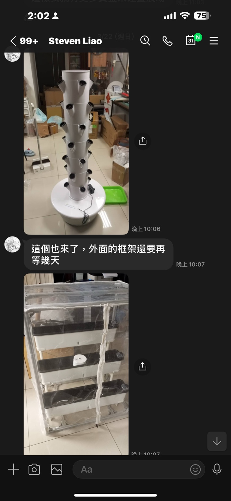

垂直高產能栽培
節省空間，適合栽種葉菜、香草、冰花與高經濟作物。
智在家鄉 × 都市小農 × AI農業助理
結合垂直農業、物聯網感測、Open Data 與 AI 分析，讓陽台、屋頂、校園與小農地都能成為智慧蔬菜基地。

WHY
面對土地有限、氣候變化與食安需求，垂直栽培設備能用更少空間種植更多蔬菜。透過 AI 平台，使用者不必是農業專家，也能獲得即時提醒與種植建議。
FEATURES
節省空間，適合栽種葉菜、香草、冰花與高經濟作物。
感測溫濕度、光照、水位、EC、pH，掌握作物狀態。
串接氣象、降雨、日照、水文與災害警示資料。
提供補水、施肥、光照、病蟲害與作物選擇建議。
APP DEMO
可放在 GitHub Pages 的前端展示版，模擬農業資訊助理平台的查詢與提醒功能。
今天下午可能降雨，建議減少補水量 20%。冰花需維持穩定光照，請檢查 LED 補光。
請選擇問題後按下按鈕。
POSTER
讓每個陽台，都長出一座智慧農場
鼓勵小農地與都市家庭，一起種出在地韌性與綠色生活。